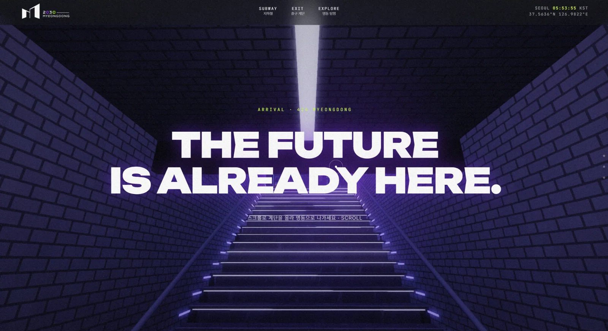

도시는
먼저 알아챕니다.
걸음의 속도, 머무는 시간, 시선이 향하는 곳. 보이지 않는 센서가 거리의 흐름을 조용히 읽습니다.

빛이 도시를 드러내고, 당신의 움직임이 미래 명동을 깨웁니다.
빛의 선을 따라 2030년의 명동으로 향합니다. 스크롤을 내려 계속 이동하세요.
미래는 멀리 있지 않습니다.
2030년의 명동은 AI가 일상에 스며든 도시입니다. 간판은 사람을 알아보고, 골목은 걸음에 맞춰 빛나며, 거리는 당신이 어디로 향하는지 먼저 압니다. 보이지 않는 기술이 가장 사람다운 방식으로 도시를 움직입니다.
걸음의 속도, 머무는 시간, 시선이 향하는 곳. 보이지 않는 센서가 거리의 흐름을 조용히 읽습니다.
사람이 몰리는 골목과 한적한 모퉁이, 비 오는 저녁과 축제의 밤. AI가 명동의 리듬을 배우고 기억합니다.
조명이 길을 열고, 거리가 먼저 추천하고, 간판이 인사를 건넵니다. 기술은 사라지고 경험만 남습니다.
서로 다른 세 공간이 하나의 도시 경험으로 연결됩니다.
도시 속 새로운 경험을 발견하세요.
지도에서 발견한 미래 명동을
이제 직접 걸으며 경험하세요.

명동역 출구에서 시작하는 당신의 여정
START EXPLORINGSCROLL TO DISCOVER · CLICK TO BEGIN2030 MYEONGDONG은 미래 도시를 보여주는 데서 끝나지 않습니다. 직접 걸어 들어가고, 기술과 공간이 바뀌는 순간을 겪으며, 사람과 도시가 연결되는 새로운 방식을 발견하는 인터랙티브 웹 경험입니다.
AI가 일상이 된 2030년의 도시를 정제된 시각 언어로 그립니다. 블랙 위로 번지는 퍼플 조명과 선명한 라임 신호.
풀스크린 도시와 공간감 있는 3D, 스크롤로 이어지는 장면 전환. 화면을 보는 게 아니라 도시 안으로 걸어 들어갑니다.
스크롤, 마우스 이동, 클릭에 따라 글자와 빛, 조형이 응답합니다. 당신이 움직이는 만큼 도시가 깨어납니다.